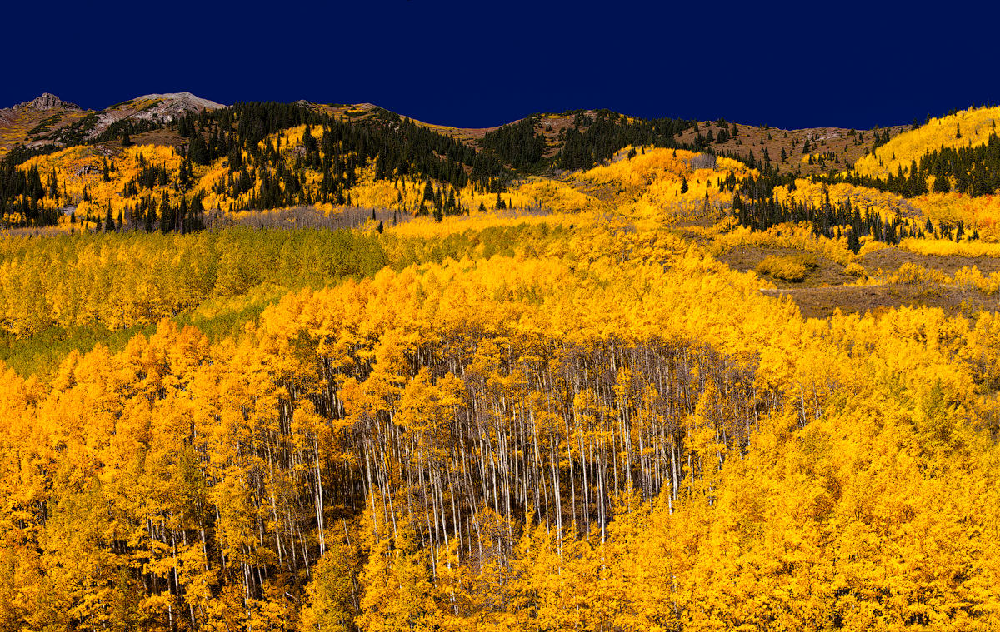
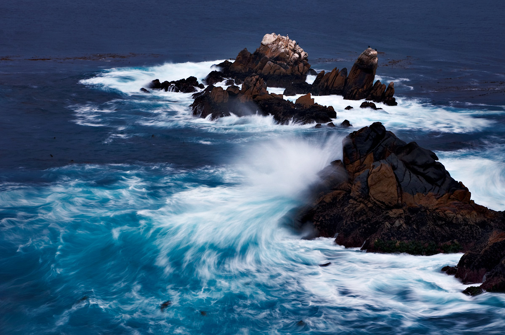
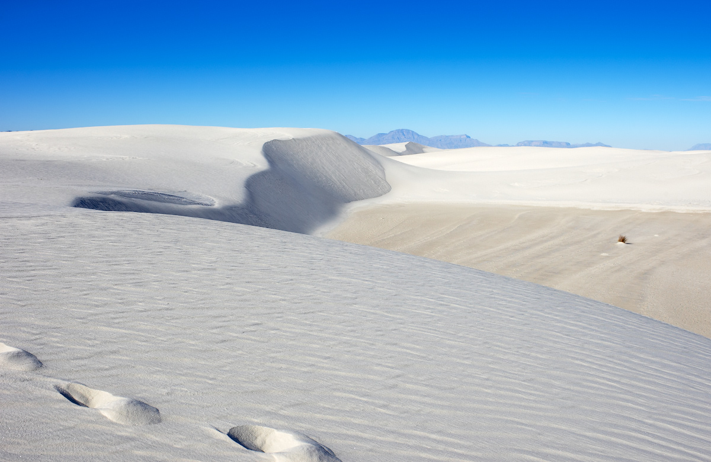

This is a gorgeous scenic drive, about 12 miles until the paved road dead ends of Castle Road. Aspen, Colorado, USA. Maybe that is why it doesn't receive alot of traffic, which is nice. It's easy to pull off where you want to, hop out, and take a photo of the beautiful mountains. Since we were there during prime aspen viewing season, we enjoyed the colorful green, gold and orange aspen trees. There are huge stands of aspens in this valley, so it's very picturesque.
Point Lobos contains a number of hiking trails, many next to the ocean, and a smaller number of beaches. It is the site of a historic marine reserve, which was expanded in 2007. It is also the home to a museum on whaling, which includes a historic building once used by area fishermen. The longstanding wildlife protection and scenic seascape have led to Point Lobos' reputation as an unparalleled local recreational scuba diving destination.
The White Sands National Monument is a U.S. National Monument located about 16 miles (26 km) southwest of Alamogordo in western Otero County and northeastern Doña Ana County in the state of New Mexico, at an elevation of 4,235 feet (1,291 m). The area is in the mountain-ringed Tularosa Basin and comprises the southern part of a 275 square miles (710 km2) field of white sand dunes composed of gypsum crystals. It is the largest gypsum dune field in the world.
As the full moon sunk below the horizon on one side of Lake Louise in Banff National Park, Canada, the morning sun edged its way up at the other. The phenomenon occurs just once a month, and ivanov was determined to photograph both celestial bodies simultaneously. 'I chose a fisheye lens because its wide angle meant that I could include much of the sky as well as the dramatic landscape.' He was lucky with the weather. Shortly after taking the shot, the clouds thickened and hid the sun for the remainder of its dawning.